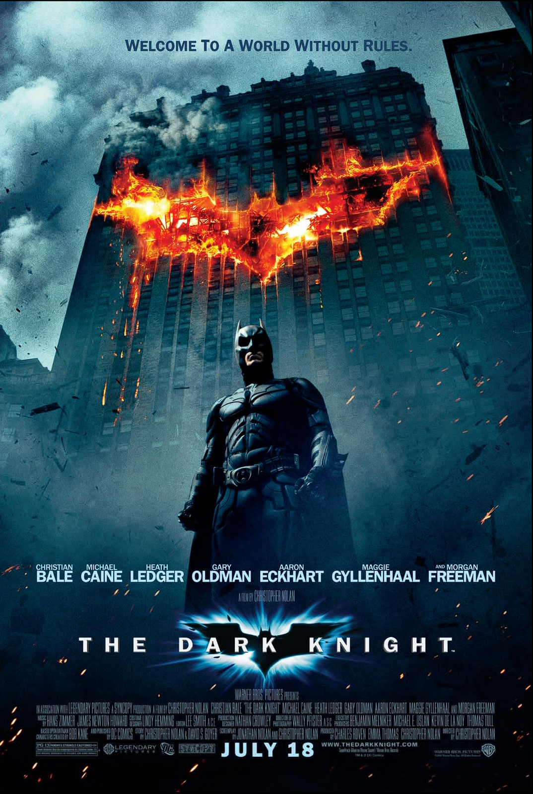
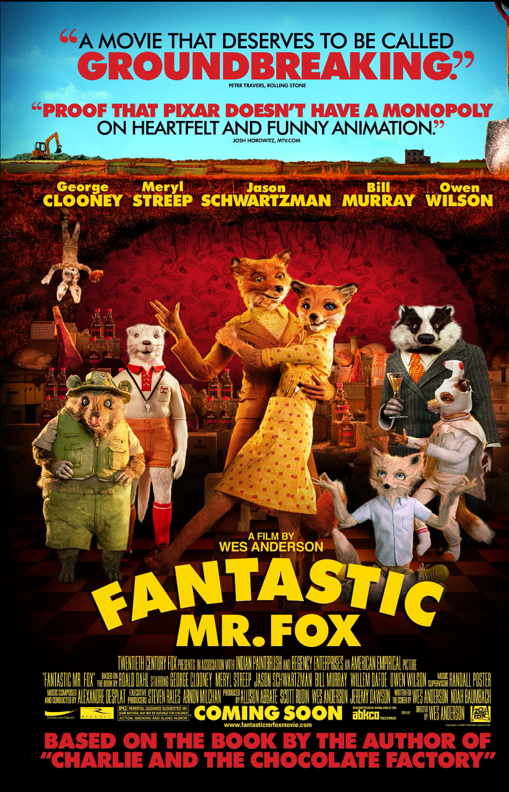

«Оппенгеймер» — биографическая драма 2023 года от режиссёра Кристофера Нолана, посвящённая жизни и деятельности Роберта Оппенгеймера, физика, сыгравшего ключевую роль в создании атомной бомбы. Фильм следует за учёным на пути от научных изысканий до руководства Манхэттенским проектом, проектом, который изменил ход Второй мировой войны и всей истории человечества. В центре сюжета — внутренние переживания Оппенгеймера, его моральные дилеммы и груз ответственности за изобретение оружия, способного уничтожить человечество.
Фильм исследует сложные темы науки, власти, совести и этики. Это не просто история о создании бомбы, но и глубокое размышление о последствиях научного прогресса, о том, как достижения могут нести как спасение, так и разрушение. «Оппенгеймер» напряжён, философски насыщен и визуально впечатляющ, сохраняя при этом характерную для Нолана многоплановость повествования и сложную структуру времени.
Картина получила признание критиков за актёрскую игру, особенно за исполнение главной роли — Киллиан Мёрфи, за визуальные эффекты и мощную режиссуру. «Оппенгеймер» стал не только коммерческим, но и художественным успехом, поднимая важные вопросы, актуальные и сегодня. Фильм напоминает о цене знаний и ответственности учёного перед обществом.
«Крёстный отец» — культовая криминальная драма 1972 года режиссёра Фрэнсиса Форда Копполы, снятая по одноимённому роману Марио Пьюзо. Фильм рассказывает историю влиятельной нью-йоркской мафиозной семьи Корлеоне, чья власть и влияние подвергаются испытанию в условиях жестокой борьбы за контроль над криминальным миром. В центре сюжета — передача эстафеты от главы семьи его сыну, который вынужден сделать непростой выбор между моралью и долгом.


«Форрест Гамп» — драма 1994 года режиссёра Роберта Земекиса, снятая по роману Уинстона Грума. Фильм рассказывает о жизни простого, но доброго человека по имени Форрест, который невольно становится свидетелем и участником ключевых исторических событий Америки второй половины XX века. Несмотря на ограниченные умственные способности, он переживает невероятные приключения, встречается с известными личностями и оказывается в центре важных исторических событий.
«Бесподобный мистер Фокс» — анимационная драмеди 2009 года режиссёра Уэса Андерсона, снятая в технике стоп-моушн. Фильм рассказывает историю харизматичного лиса по имени Мистер Фокс, который, несмотря на обещание, данное жене, перестать воровать, возвращается к своим старым привычкам, чтобы добыть еду для своей семьи. Его озорство и жажда приключений вскоре втягивают его, его друзей и даже целое сообщество животных в опасное и захватывающее противостояние с тремя жестокими фермерами.
Подробнее
«Конь Бо Джек» это анимационный драмеди, созданный Рафаэлем Боб-Уэйссманом, и рассказывает историю бывшей звезды телешоу — депрессивного, саморазрушающегося лошадиного актёра по имени Бо Джек. Вокруг него разворачивается сложный мир Голливуда, где смешиваются сатира, драма и философские размышления о славе, одиночестве, зависимости и поиске смысла жизни.
Сериал не ограничивается просто юмором или анимацией: он глубоко затрагивает темы психического здоровья, токсичности отношений, травм детства, поиска идентичности и моральной ответственности.


a«Тёмный рыцарь» — супергеройский боевик 2008 года режиссёра Кристофера Нолана, второй фильм трилогии о Бэтмене. Действие разворачивается в Готэме, где миллиардер Брюс Уэйн продолжает борьбу с преступностью в образе Тёмного рыцаря. Однако его миссия оказывается под угрозой из-за появления загадочного и харизматичного преступника — Джокера, чьи действия ставят под сомнение саму идею справедливости и порядка.
Подробнее
«Формула-1» (2025) — гоночная драма режиссёра Джозефа Косински, действие которой разворачивается в мире профессиональных автогонок. Фильм рассказывает историю талантливого, но амбициозного гонщика, стремящегося закрепиться в элитном спорте, где скорость, риск и напряжение становятся частью повседневной жизни. В центре сюжета — борьба за место под солнцем в команде мечты, сложные отношения с напарниками, тренерами и болельщиками, а также внутренние конфликты, которые испытывают даже самые сильные духом спортсмены.
Подробнее